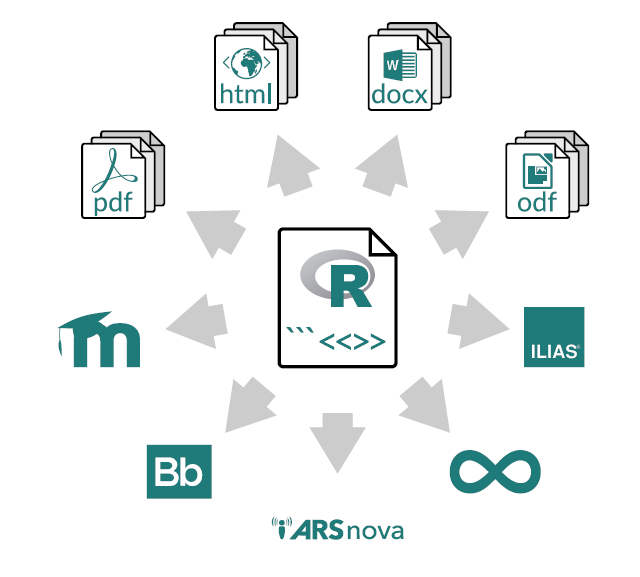

Chapter 2 Exams
2.1 Concepts
Goals
- reduce the risk of cheating
- have a one-for-all exams generator
References:
- First Steps (website of R_Exams)
- Achim Zeileis, Nikolaus Umlauf, Friedrich Leisch (2014). “Flexible Generation of E-Learning Exams in R: Moodle Quizzes, OLAT Assessments, and Beyond.” Journal of Statistical Software, 58(1), 1-36. doi:10.18637/jss.v058.i01
- Moodle Tests: Not So Much of a Fuss When You Have R M. Cristina Miranda, Anabela Rocha, ICSIT 2022
Techniques
Techniques to reduce the risk of cheating:
- Randomly selecting one (or more) out of a set of exercises for each participant.
- Randomly shuffling answer alternatives in single-choice and multiple-choice questions.
- Randomly selecting numbers, text blocks, graphics, etc. using the R programming language.
Reference First Steps
Output to several formats
- html and pdf/LaTeX
- pandoc (for customizable outputs in various formats (Docx, ODF, PDF, …).
- nops (fixed PDF format that can be automatically scanned and evaluated),
- LMS: moodle, blackboard,
- QTI XML (various learning management systems: canvaslms, openOlat), arsnova (JSON format)

References:
An exercise, in a standalone file
Each exercise (or rather “exercise template”):
- Data-generating process written in R.
- Question text.
- Solution text.
- Meta-information.
Reference First Steps
cloze type - a special question format
“cloze” question type can handle several questions types, in the same file, for example inside an R list or explicitly described.
2.2 In your machine
Install
Some steps:
-
- For some tasks (e.g., output for some learning management systems) it is necessary that the base R zip() function works. On Windows this requires to install the Rtools and to include them in the PATH environment variable. “Rtools is a toolchain bundle used for building R packages from source”
Install
examspackage:
install.packages("exams", dependencies = TRUE)Reference Installing R/exams
Only once
Create a folder for questions and then do:
setwd("c:/<folder>/rexams-questions")Note in R one must use “c:/” instead of “c:\”.
library("exams")
exams_skeleton(markup = "markdown",
writer = c("exams2html", "exams2pdf", "exams2moodle"))Reference First steps
2.3 The Slow Development Cycle
We use already created contents - there creation coul be an addictive process!!
Decision about exam contents (step 1/5) – a vector of filenames
# setwd("~/<root of r-exams project>")
library("exams")
elearn_exam <- c(
"swisscapital.Rmd",
"deriv.Rmd",
"ttest.Rmd",
"boxplots.Rmd",
"function.Rmd",
"lm.Rmd",
"fourfold2.Rmd")Appreciate, in html, the future exam (step 2/5) – exams::exams2html()
set.seed(2023-05-16) # or 2002
exams2html(elearn_exam, n = 1, name = "R-exams")exams2htmlproduce html output reading from “exercises” folder and writing to “output” foldername = "R-exams"specifies the Moodle Category. Below “R-exams” will reside all the exercises numbered “Exercise 1”, “Exercise 2”, ….nis the number of variations of a question
rules-of-thumb about n:
- maybe one can correct a moodle question in runtime (during exam)
- n=6 is a good number if questions are new (easy to correct)
- n much greater avoid completely participant copy of solutions but in case of error, a lot of work expects the evaluator/teacher
Publish the exam (step 3/5) – exams::exams2moodle()
set.seed(2023-05-16)
exams2moodle(elearn_exam, n = 3, name = "R-exams", dir="output")
## This yields the file R-exams.xml that can be imported into Moodle.
##output folder should contain the xml file.name = "R-exams"the “R-exams” string will define a new category in Moodle structure.
Moodle import (step 4/5)
A step-by-step video guide to importing and customizing the quiz in Moodle is available on YouTube at https://www.youtube.com/watch?v=5K9hrE3YkPs.
Moodle direct observation (step 5/5)
Direct observation, of questions, in moodle can clean last mistakes or errors.
Reference E-Learning Quizzes
2.4 stackoverflow
More than 250 questions:
Exemple: “Change TRUE and FALSE to Verdadero and Falso in”mchoice” exercises of R-exams”: answer here
- More questions: https://stackoverflow.com/questions/tagged/r-exams/
Reference Resources